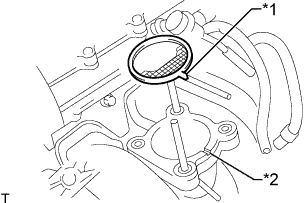

КОРПУС ДРОССЕЛЬНОЙ ЗАСЛОНКИ > УСТАНОВКА |
| 1. УСТАНОВИТЕ КОРПУС ДРОССЕЛЬНОЙ ЗАСЛОНКИ С ЭЛЕКТРОДВИГАТЕЛЕМ В СБОРЕ |
|  |
Установите на впускной коллектор новую прокладку.
| *1 | Выступ |
| *2 | Канавка |
Установите корпус дроссельной заслонки с электродвигателем и закрепите его 2 болтами и 2 гайками.
Подсоедините перепускной шланг охлаждающей жидкости.
Подсоедините перепускной шланг охлаждающей жидкости № 2.
Подсоедините датчик положения дроссельной заслонки и разъем электродвигателя привода дроссельной заслонки.
| 2. УСТАНОВИТЕ СОЕДИНИТЕЛЬ ВПУСКА ВОЗДУХА |
Закрепите соединитель впуска воздуха 3 болтами.
Затяните хомут шланга.
Подсоедините вакуумный шланг.
Закрепите зажим жгута проводов.
Отсоедините шланг вентиляции картера № 2.
| 3. УСТАНОВИТЕ ВОЗДУШНЫЙ ФИЛЬТР И ШЛАНГ |
 |
Установите воздушный фильтр и шланг, совместив его метку с меткой крышки воздушного фильтра, как показано на рисунке.
| *1 | Метка |
| *a | Верх |
| *b | Передняя сторона |
Затяните хомут шланга.
Введите в зацепление 4 зажима.
Подсоедините разъем датчика массового расхода воздуха и закрепите его 3 зажимами.
| 4. ДОБАВЬТЕ ОХЛАЖДАЮЩУЮ ЖИДКОСТЬ ДВИГАТЕЛЯ |
Затяните пробку сливного крана блока цилиндров.
Затяните пробку сливного крана радиатора вручную.
Отсоедините 2 виниловых шланга.
Долейте охлаждающую жидкость.
| Параметр / Устройство | Заданные условия | |
| для моделей с автоматической трансмиссией | Для моделей без заднего подогревателя | 8,1 литра (8,6 кварты США, 7,1 английской кварты) |
| Для моделей с задним подогревателем | 9,9 литра (10,5 кварты США, 8,7 английской кварты) | |
| для моделей с механической трансмиссией | Для моделей без заднего подогревателя | 8,3 литра (8,8 кварты США, 7,3 английской кварты) |
| Для моделей с задним подогревателем | 10,1 литра (10,7 кварты США, 8,9 английской кварты) | |
Медленно налейте охлаждающую жидкость в расширительный бачок радиатора до отметки "F".
Установите пробку расширительного бачка.
Установите на место пробку радиатора.*1
Запустите двигатель и сразу же остановите его.*2
Подождите примерно 10 с. Затем снимите пробку радиатора и проверьте уровень охлаждающей жидкости. Если уровень охлаждающей жидкости снизился, добавьте охлаждающую жидкость.*3
Повторяйте шаги *1, *2 и *3 до тех пор, пока уровень охлаждающей жидкости не снизится.
Установите на место пробку радиатора.*4
Настройте систему кондиционирования, как описано ниже.*5
| Параметр / Устройство | Условие |
| Скорость вентилятора | Любая настройка, кроме OFF (ВЫКЛ) |
| Температура | В сторону "WARM" |
| Переключатель системы кондиционирования | Выкл |
Запустите двигатель, прогрейте его настолько, чтобы открылся термостат, а затем дайте поработать в таком состоянии несколько минут, чтобы прокачать охлаждающую жидкость.*6
Остановите двигатель и подождите, пока охлаждающая жидкость не охладиться до температуры окружающего воздуха. Затем снимите пробку радиатора и проверьте уровень охлаждающей жидкости.*7
Если уровень охлаждающей жидкости снизился, добавьте охлаждающую жидкость и прогрейте двигатель до открывания термостата.*8
Если уровень охлаждающей жидкости не снизился, убедитесь, что уровень жидкости в расширительном бачке радиаторе находится на линии F.
Если уровень охлаждающей жидкости ниже линии F, повторите шаги с *4 по *8.
Если уровень охлаждающей жидкости выше линии F, слейте охлаждающую жидкость до линии F.
| 5. ПРОВЕРЬТЕ, НЕТ ЛИ УТЕЧЕК ОХЛАЖДАЮЩЕЙ ЖИДКОСТИ |
Заполните радиатор охлаждающей жидкостью и подсоедините приспособление для опрессовки системы охлаждения и проверки пробки радиатора.
Прогрейте двигатель.
С помощью приспособления для опрессовки системы охлаждения и проверки пробки радиатора увеличьте давление в радиаторе до 123 кПа (1,3 кгс/см2, 18 фунтов на кв. дюйм) и убедитесь, что давление не падает.
Если давление снижается, проверьте на наличие утечек шланг, радиатор и насос системы охлаждения. При отсутствии внешних утечек проверьте сердцевину отопителя, блок цилиндров и головку блока цилиндров.
| 6. УСТАНОВИТЕ ЗАЩИТУ КАРТЕРА ДВИГАТЕЛЯ № 1 В СБОРЕ |
 |
Присоедините защиту картера двигателя к кузову автомобиля, как показано на рисунке.
Вверните 4 болта.
| 7. УСТАНОВИТЕ НИЖНЮЮ НАКЛАДКУ ПЕРЕДНЕГО БАМПЕРА |
Установите нижнюю облицовку переднего бампера и закрепите ее 5 болтами и фиксатором.
| 8. ВЫПОЛНИТЕ ИНИЦИАЛИЗАЦИЮ |
Отсоедините провод от отрицательного (-) вывода аккумуляторной батареи. Подождите не менее 60 с и подсоедините провод.
Включите зажигание, не нажимая педаль акселератора.
Подсоедините портативный диагностический прибор к DLC3 и удалите DTC (Нажмите здесь).
Запустите двигатель и убедитесь, что MIL не горит, а частота вращения коленчатого вала двигателя на холостом ходу находится в заданном диапазоне, когда кондиционер выключен после прогрева двигателя.
| Условие | Заданные условия |
| Выключатель системы кондиционирования выключен | 600–700 об/мин |
Войдите в следующие меню: Powertrain/ Engine and ECT/ Data List/ Throttle Pos. Sensor Output. Нажмите педаль акселератора до упора и убедитесь, что значение составляет не менее 60%.
Выполните дорожное испытание и убедитесь, что нарушения отсутствуют.